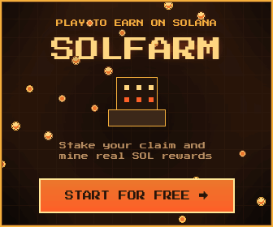

SolFarmer: the guide that shows the real numbers
Everything on this site comes from the game's own client code or from a player's own account — the rig roster, the watts, the yield formula, the economy change that locked deposits. No affiliate videos, no "earn $200 a day". What it does have: a free calculator that ranks all 48 rigs, and an honest answer to whether this game can pay you.
SolFarmer is a browser idle-mining game on Solana: you place pixel rigs in a cave, they generate a share of a SOL pool, and you can withdraw to a wallet. It is genuinely free to start and it does pay out. It will also not make you money, and this page explains exactly why before you spend an evening on it.
If you decide to try it, the code below is mine — and the banner underneath opens the same sign-up page with it already filled in.

What is on this site
- The complete 2026 guide — SOL vs SSOL (the one-way currency change), the daily loop, rack slots and watts, XP and the level walls, the buy ladder, the Camp and PvP, guilds, the marketplace, and honest withdrawal numbers.
- The ROI calculator — all 48 rigs ranked by hash rate per SOL and per watt, with days-to-break-even, calibration to live rates, and what actually fits in your first rooms.
- This page — the referral code, what it does and does not do, and the short honest version of the earnings question.
Disclosure: that link and the code above are mine. SolFarmer's affiliate programme pays the referrer 5% of what referred players deposit (3% and 2% on the two tiers below). You get nothing extra and lose nothing by using it — it is a tip for writing this. I have played this game with my own money and my own time; the numbers below are mine, not marketing.
The referral code, honestly
Every SolFarmer page that ranks on Google opens with a code and a promise. Here is the unvarnished version: entering E62B37FF at sign-up does one thing — it links your new account to my referral. It does not grant bonus SOL, a rare miner or a faster start. Every new player receives the same starter rig, whatever code they use. Codes in this game are a tipping mechanism for content writers, not a loot box. Any page promising "exclusive 5 SOL with this code" is lying to you.
Two practical notes that trip people up:
- The code is only read at sign-up. There is no field for it later. If you already registered, the code cannot be added afterwards.
- Existing accounts cannot refer. The code is generated for new accounts only, so you cannot refer yourself with a second login.
Add me in game: ppix
I am not going to pretend a code gives you a bonus, so here is what I can actually offer. My in-game nickname is ppix. Friend-request me after you sign up: I accept every request that comes from this page, answer questions about the guide by message, and pass on spare loot when I have duplicates sitting idle. That is the whole incentive — a person who plays the game, not a coupon.
If you would rather not use a code at all, use none. Nothing on this site is gated behind it: the guide and the calculator are free either way.
What you actually get for free
SolFarmer is one of the rare crypto games where the free tier is real. You sign up with an email or Google account, you get a starter miner instantly, and you never touch a wallet until you want to cash out.
| What | You get | Catch |
|---|---|---|
| Starter miner | 1 rig, free, immediately | 0.01 H/s. That is a rounding error. |
| Rack space | Around 12 slots in the first room | Fills up fast; slots, not money, are your real constraint. |
| Free Lucky Box | One chest per day | Typical payout is around 0.0001–0.0005 of the in-game currency. |
| Daily Arcade | 12 mini-games, one play each, daily prize pool | Top of the leaderboard takes 30% of the pool. The rest share crumbs. |
| Withdrawal | Real on-chain SOL, no wallet needed to play | Minimum 0.1 SOL. On a small farm that is weeks away. |
How earnings really work
This is the part every promotional video skips. Your payout is not a fixed salary from your miners. It is your share of a pool: your hashrate divided by total network hashrate. Two consequences follow, and both are bad for new players:
- Your rate falls as the game grows. The same 2 H/s farm earns less next month than today if the network doubles.
- Early numbers are tiny. At low levels you are earning fractions of a cent per day. The gap between the free tier and a paid rig is enormous, which is precisely the point of the design.
From my own account, after a week of daily play: single-digit thousandths of a SOL in withdrawable balance, and roughly 0.01–0.05 SOL of total value across the first week if you count everything. That is a few euros. It matches what the game's own FAQ implies and what almost no sponsored video admits.
How to enter the code
- Open solfarmer.io/auth?ref=E62B37FF — the code is filled in automatically. Or type
E62B37FFinto the referral field on the sign-up form. - Register with email or Google. No wallet, no seed phrase, no extension.
- Place your starter miner in the cave. It starts earning the moment it is placed.
- Then read the complete SolFarmer guide, because the first ten levels have a specific order that saves you weeks.
- Before you buy anything, run the ROI calculator: it ranks all 48 rigs by hash rate per SOL and per watt, and shows what actually fits in your room.
FAQ
Is there a SolFarmer XP glitch or fast-leveling trick?
The XP churn: sell a mid-level rig on the marketplace, rebuy cheap starters, place and merge them. Buy, place and merge each pay XP, so the same money levels you several times over for the cost of the 5% market fee. The XP-per-action rates are the client's; the 700-XP-in-two-minutes figure is player-reported — details in the guide.
Why is the arcade leaderboard full of 50,000-point scores?
Because those runs are scripted. The daily pot is a few hundredths of SSOL, so the board is not worth playing for money — see the arcade section.
What is the SolFarmer referral code?
A short alphanumeric code entered when creating a new account. It credits the sharer with a share of your future deposits. The one on this page is E62B37FF.
Does the code give the new player anything?
No bonus currency, no exclusive miner. All new accounts start identically. Using a code is a way to support whoever wrote the guide that got you here.
Can I add the code after signing up?
No. It is only read during registration.
Is SolFarmer free to play?
Yes. Free sign-up, free starter miner, no wallet required to play. A wallet only becomes relevant when you want to withdraw.
How much SOL can you realistically earn?
Fractions of a cent per day at low levels, growing as your farm grows. Minimum withdrawal is 0.1 SOL. Free-to-play players should expect a few dollars a month, not a salary.
Is it a scam?
It is not a scam: withdrawals are real and on-chain, and the game has been running and shipping updates since 2026. It is, however, a game whose progression curve pushes you towards depositing. Spend accordingly.
Do I need a Solana wallet?
Not to play. You need one to withdraw, and the game requires the minimum 0.1 SOL threshold to be met.
Does it work on mobile?
It runs in any modern browser, phone included. It is desktop-first; the mini-games are noticeably easier with a mouse.
Create your free farm with code E62B37FF →Run the ROI calculator first